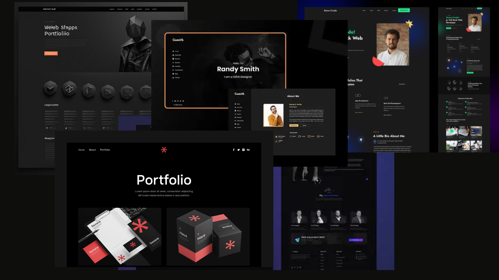

Construyo soluciones en backend y frontend

Una aplicación para gestionar tareas con categorias y estados dinamicos Rol: Desarrollador frontend tecnologias: HTML, CSS, JavaScript Desafio: Manejo de estado y manipulacion del DOM en tiempo real.
Ver proyectoSistema backend simulado que gestiona usuarios y productos utilizando programación orientada a objetos en Node.js Rol: Desarrollador backend tecnologias: Node.js, JavaScript, POO Desafio: Implemetancion de herencia, encapsulamiento y organizacion modular del codigo.
Ver proyectoUna calculadora simple con operaciones básicas Rol: Desarrollador frontend tecnologias: HTML, CSS, JavaScript Desafio: Implementar la lógica de la calculadora y manejar la entrada del usuario.
Ver proyectoUn contador simple con funcionalidades de incremento y decremento Rol: Desarrollador frontend tecnologias: HTML, CSS, JavaScript Desafio: Manejar eventos del usuario y actualizar dinámicamente la interfaz.
Ver proyectoUn proyecto de comercio electrónico para una tienda de café, con funcionalidades de carrito de compras y gestión de productos aun en proceso de desarrollo. tecnologias: HTML, CSS, JavaScript, Node.js Rol: Desarrollador full stack
Ver proyectoSoy estudiante de análisis y desarrollo de software, con certificado en desarrollo Full Stack y me apasiona crear aplicaciones funcionales y aprender nuevas tecnologias constantemente.